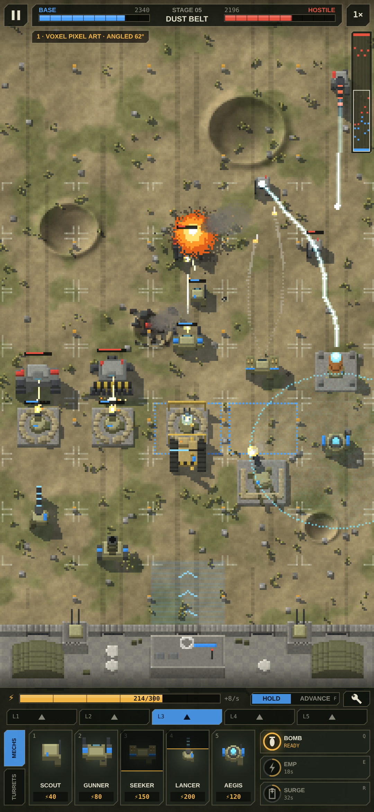
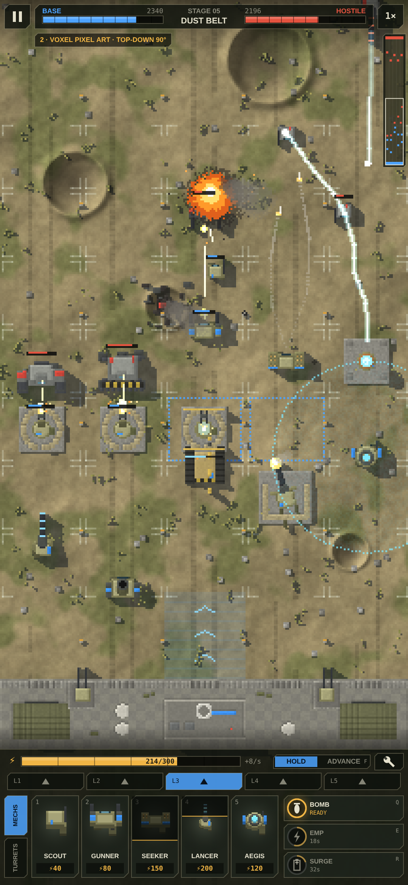
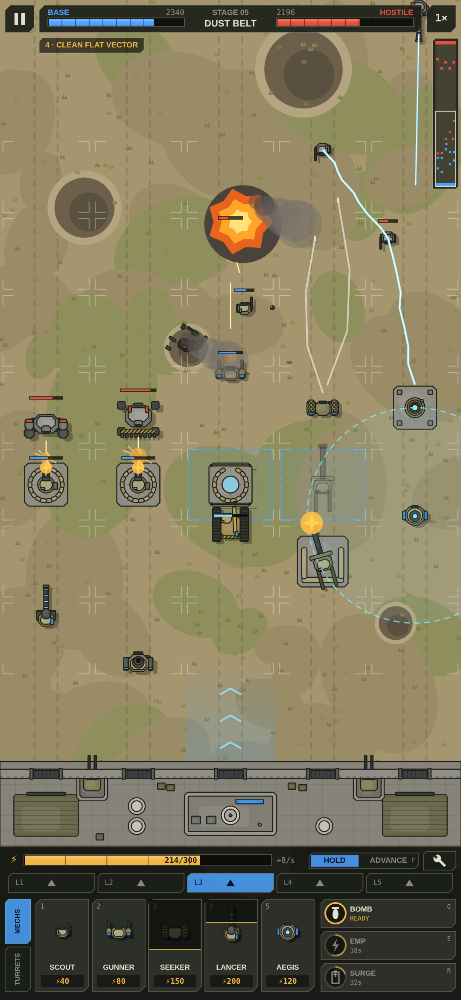

Iron Defense: art style samples
The same scene in four styles. Rendered entirely in code, with no image assets.

1 · Voxel pixel art, angled 62°Spec target. Fronts of units visible, hard long shadows.

2 · Voxel pixel art, top-down 90°Same models and engine, camera straight down.
 3 · Detailed painted top-downShaded parts, soft shadows, lit terrain, glow.
3 · Detailed painted top-downShaded parts, soft shadows, lit terrain, glow.

4 · Clean flat vectorSolid fills and outlines. Cheapest, very readable.